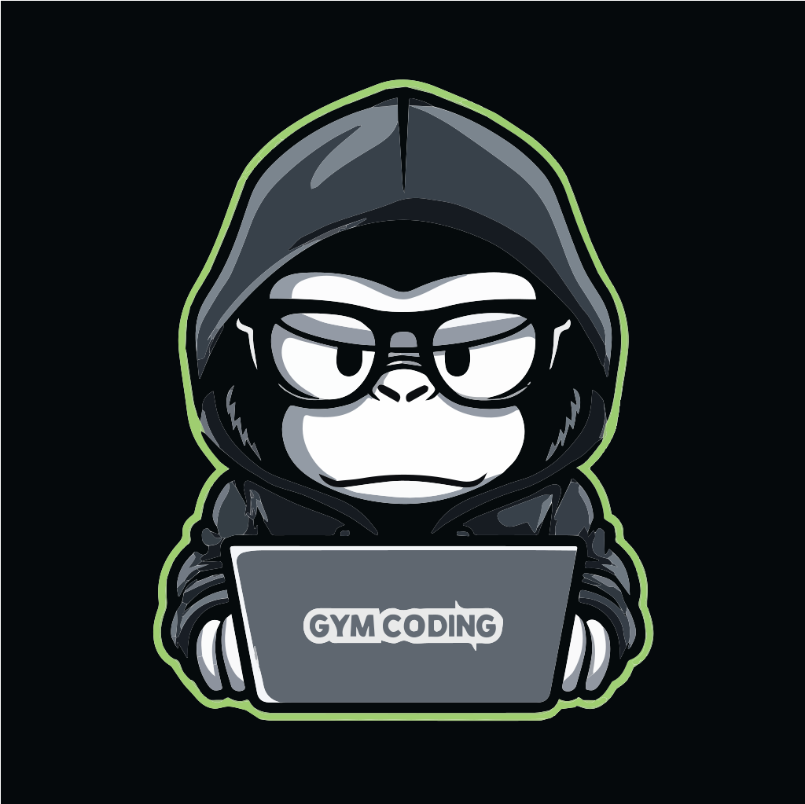

클로드 코드 완벽 마스터
#claude-code #session
02
PROBLEM
Claude Code 세션,
이렇게 쓰고 있나요?
1
한 세션으로 끝까지 밀어붙인다
컨텍스트가 커질수록 모델이 점점 헤맵니다
2
자동 컴팩션에만 맡긴다
모델이 가장 혼란스러울 때 요약돼 손실 발생
3
실수는 수정 메시지로 덮는다
실패한 시도가 컨텍스트를 계속 오염시킵니다
1M 컨텍스트, 크다고 무조건 좋은 게 아닙니다